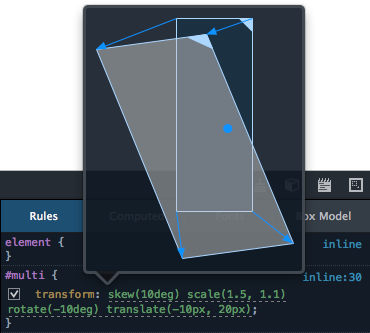
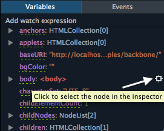
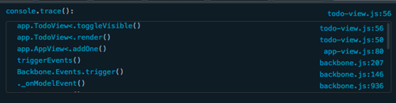
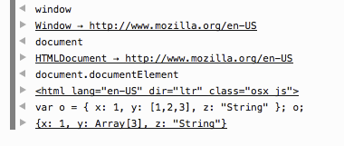
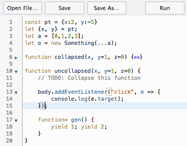

支援 CSS 原始檔對應、網路效能分析，還有更多功能
Firefox 29 現已進入曙光版 (Aurora) 釋放頻道了。依照慣例，讓我們來看看此版本的開發者工具有哪些重大變化吧！
更美觀的工具
除了新功能之外，這次也更新了暗 (Dark)、亮主題 (Light theme) 的外觀與視覺感受。我們徹底翻修過亮主題，並讓此二種主題在整個工具箱中達到更一致的設計。現在可透過工具箱選項更改目前的主題。(可參閱此開發討論記錄)
{kind=link}
{kind=link}
網路監測器
網路監測器 (Network Monitor) 現可顯示瀏覽器載入頁面不同部位時所需的時間。如此不論是首次執行或已有快取的情況，均可協助測得 App 的網路效能。(可參閱此開發討論記錄)
{kind=link}
若要開啟效能分析工具，只要點選「網路 (Network)」面板中的碼錶圖示即可。若需更多相關資訊，可觀看下方短片或參閱本篇MDN 文章。
現在也能以 Data URI 的格式複製圖片請求。只要對圖片請求按下滑鼠右鍵，在右鍵選單中點選「以Data URI 複製圖片 (Copy Image as Data URI)」，就可將 Data URI 複製到剪貼簿中。(可參閱此開發討論記錄)
{kind=link}
檢測器
我們更新了檢測器 (Inspector) 的內容強調行為，讓更多工具都具備此強調功能。(可參閱此開發討論記錄)
CSS 的 transform 屬性預覽工具提示功能，現已新增到 CSS 規則檢視之中了。現在只要將滑鼠游標停留在 CSS 的 transform 之上，就會看到工具提示並搭配 transform 的視覺呈現效果。快去下載 Firefox Nightly 或 Aurora 即可體驗某些現成的 CSS transfom 範例。( 可參閱此開發討論記錄 )

CSS 規則檢視現支援一次貼上多個 CSS 宣告，例如
background: #ccc; color: red
如同「網路」面板中的功能，開發者現可用 Data URI 的格式複製 <img> 元素。( 可參閱此開發討論記錄 )
樣式編輯器
樣式編輯器 (Style Editor) 現已新支援 CSS 原始檔對應功能 (Source map) ( 可參閱此開發討論記錄 )，且可於樣式編輯器中自動完成 CSS 屬性與數值。( 可參閱此開發討論記錄 )
想了解更多相關資訊嗎？可參閱本篇《Live Editing Sass and Less in the Firefox Developer Tools》。
{kind=link}
除錯器
除錯器 (Debugger) 中，我們在資源清單旁邊新增了典型的呼叫堆疊 (Call stack) 清單。(可參閱此開發討論記錄)
{kind=link}
除錯器現具備新的「啟用/停用所有中斷點 (Enable/disable all breakpoints)」按鈕，可一次啟用現有的全部中斷點，進而迅速切換一般用途或除錯作業。(可參閱此開發討論記錄)
{kind=link}
現在也能在除錯器中強調並檢視 DOM 節點。如果將滑鼠游標置於變數清單中的 DOM 節點上，就會強調顯示網頁上的節點。如果點擊「檢測」圖示，隨即會在檢測器分頁中開啟該節點。現亦能在主控台的輸出結果中找到此功能。(可參閱此開發討論記錄)

Pretty printing 現也可用於程式碼註解之上了。我們現在用上了開放源碼的 pretty-fast 工具，所以很快就能獲得漂亮的畫面。因為此工具標榜了「快 (fast)」，如果你發現速度還是跟以前一樣慢，請別忘了通知我們。(可參閱此開發討論記錄)
主控台
我們強化過了 console.trace。此呼叫堆疊可將輸出結果整理到同區塊之內顯示，並包含連結以存取除錯器中的每一行。( 可參閱此開發討論記錄 )

我們也強化了主控台物件輸出功能，可根據物件類型而顯示其他資訊。( 可參閱此開發討論記錄 )

程式碼編輯器
在如除錯器、程式碼速記本 (Scratchpad)、樣式編輯器 (Style Editor) 等所有工具之中，現在都能看到程式碼編輯器 (Code editor) 了。開發者可在此版本中看到其中幾項更新：
- 可於編輯器中摺疊程式碼。( 可參閱此開發討論記錄)
- 程式碼編輯器現可提供 Emacs 與 VIM keybindings。若要啟動此二項功能，可開啟 about:config 並將「devtools.editor.keymap」設定為「vim」或「emacs」，最後重新啟動開發者工具即可。( 可參閱此開發討論記錄)
- 現支援 ES6 語法強調功能 ( 可參閱此開發討論記錄)

另外很感謝此版開發者工具共 43 位貢獻者！並可參閱 Firefox 29 開發者工具所修正的錯誤清單。
你有任何建議要讓我們知道？發現錯誤想回報？需要其他功能？或有任何問題嗎？當然歡迎你透過 @FirefoxDevTools 聯絡我們團隊。
原文連結：CSS source map support, network performance analysis & more – Firefox Developer Tools Episode 29